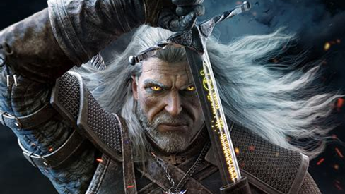
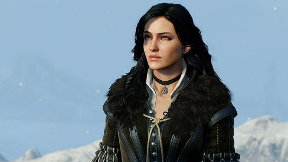
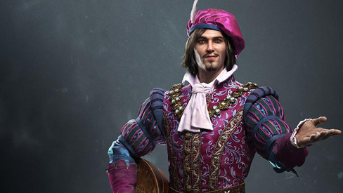
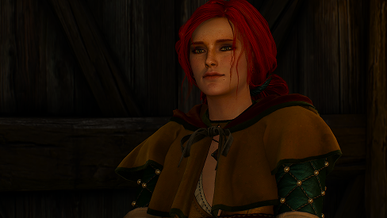

<main>
    <section>
        <div class="about-book">
            <h1>Assassin’s Creed: Renascença</h1>
            <div class="book-content-wrapper">
            
                <div class="book-details">
                    <p><strong>Autor:</strong> Oliver Bowden</p>
                    <p><strong>Gênero:</strong> Ação, Aventura, Ficção histórica, Literatura Fantástica</p>
                    <p><strong>Resumo:</strong>O livro acompanha Ezio Auditore da Firenze, um jovem nobre italiano do século XV que vê sua vida desmoronar após a traição e execução injusta de seu pai e irmãos. Movido pela sede de vingança, Ezio descobre uma antiga ordem secreta — os Assassinos — que luta há séculos contra os Templários, uma organização que busca controlar a humanidade. Ao longo de sua jornada por cidades como Florença, Veneza e Roma, Ezio amadurece, aprende a arte da furtividade e do combate, e se transforma em um verdadeiro Mestre Assassino. Inspirado pelo conhecimento de figuras históricas como Leonardo da Vinci e Nicolau Maquiavel, ele passa de um jovem impulsivo a um herói lendário, determinado a lutar pela liberdade e pela justiça.</p>
                </div>
            </div>
        </div>
    
        <h2 class="subtitle">Resenha</h2>
        <p class="text">
            Assassin’s Creed: Renascença é uma fascinante mistura de aventura, drama e história, transportando o leitor para a Itália do Renascimento, um período marcado por intrigas políticas, conspirações e grandes avanços culturais. <br> <br>
            O protagonista, Ezio Auditore da Firenze, tem sua vida transformada quando presencia a traição e execução de seu pai e irmãos, o que desperta nele uma intensa sede de vingança e justiça. Ao longo da narrativa, acompanhamos a evolução de Ezio de um jovem impulsivo e despreocupado para um Assassino habilidoso e determinado, disposto a enfrentar poderosas organizações secretas e corrompidas. <br> <br>
            A trama é repleta de emoções, reviravoltas e cenas de ação intensas, que prendem o leitor do início ao fim. Um dos grandes destaques da obra é a presença de Leonardo da Vinci, que, com suas invenções e intelecto brilhante, se torna um aliado essencial na jornada de Ezio. <br> <br>
            A relação entre os dois personagens traz leveza e humanidade à história, além de mostrar o quanto ciência e estratégia caminham lado a lado. A escrita de Oliver Bowden é envolvente e cinematográfica, descrevendo com riqueza de detalhes os cenários, as lutas e os dilemas morais que cercam o protagonista. 
            O leitor é facilmente transportado para as ruas de Florença, Veneza e Roma, sentindo-se parte desse universo cheio de mistérios e descobertas.
        </p>

        <h2 class="subtitle">Personagens</h2>
        
        
        
        
    </section>

</main>